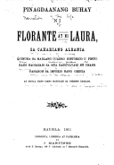
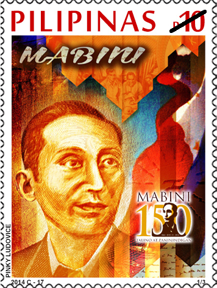

Ang Buhay ni
Francisco Baltazar
Si Francisco Baltazar, na kilala sa pangalang Franciscode Balagtas, ay isinilangan noong Abril 30, 1788 sa Biga, Guiguinto, Bulacan. Siya ay itinuturing na ang pinakadakilang makata sa kasaysayan ng Pilipinas at pormal na kinilala bilang "Ama ng Panitikang Filipino."
Lumaki siya sa isang pamilyang mahirap. Ang kanyang mga magulang ay sina Juan Baltazar at Juana de la Cruz. Sa murang edad, napansin na ang kanyang katalinuhan at pagkahilig sa panitikan. Nag-aral siya sa Maynila kung saan niya natutunan ang wikang Kastila at mga sulating-pukpok na karaniwan noon.
Noong 1835, isinulat niya ang kanyang masterpiece na Florante at Laura, isang awit na kinilala bilang isa sa mga pinakadakilang akda sa panitikang Filipino. Ito ay isang awit na binubuo ng 399 na kuwadro o saknong, bawat isa ay may labindalawang pantig sa bawat linya.
Ang kanyang buhay ay puno ng mga pagsubok — kinulong siya dahil sa isang labanan at nagdusa sa kahirapan — ngunit hindi nagpatuloy ang kanyang pagsusulat. Namatay siya noong Pebrero 20, 1862 sa Maynila, ngunit ang kanyang pamana ay mabubuhay magpakailanman sa puso ng bawat Pilipino.
Mga Pambihirang Sulating-Filipino
Ang mga akda ni Balagtas ay nagsimula ng isang bagong panahon sa panitikang Filipino. Narito ang kanyang mga pinakamahalagang kontribusyon.

Florante at Laura
Ang Florante at Laura ay isang awit na binubuo ng 399 na kuwadro at itinuturing na pinakamahalaga at pinakakilalang akda sa panitikang Filipino. Ito ay isang parabula na nagsasalaysay ng kwento ng isang prinsipe na nagngangalang Florante at ang kanyang pag-ibig sa isang dalaga na nagngangalang Laura.
Sa kabila ng hitsura nitong isang kwento ng pag-ibig, ang Florante at Laura ay may malalim na puno ng alegorya at pagsusuri sa lipunan. Sinasalamin nito ang mga pakikibaka ng mga Pilipino sa ilalim ng pananakop ng mga Kastila — ang hustisya, ang kawalan ng kalayaan, at ang pag-asa para sa kinabukasan.
"Ang kalis na puno ng apoy, ay siyang pumapatay sa sariling nilalang."
Florante at Laura
Ang kanyang masterpiece — isang awit na may 399 na kuwadro na nagsasalaysay ng pakikibaka para sa katarungan at pag-ibig. Isang alegorya para sa pakikibaka ng mga Pilipino.
Parito Ka, Larawan
Isang dalit o dasal na nagpapahayag ng kagandahan ng kalikasan at ang wagas na pag-ibig sa Diyos. Ipinapakita ang kasanayang literaryo ni Balagtas sa iba't ibang anyo.

Apolinario Mabini
Mga sulat at tula na isinulat ni Balagtas habang siya ay nakakulong. Nagpapakita ng kanyang katatagan ng loob at patuloy na pagsusulat kahit sa gitna ng matinding paghihirap.
Kahalagahan sa Panitikang Filipino
Hindi lamang isang makata — si Balagtas ay isang bayani ng wikang Filipino na nagbigay-daan para sa mga susunod na henerasyon ng mga manunulat.
Wika at Panitikan
Si Balagtas ang unang nagsulat sa wikang Tagalog na may mataas na antas ng pamamaraan at kagandahan. Kanyang ipinakita na ang wikang Filipino ay kasing-yaman at kasing-ganda ng mga wikang Europeo sa pagsusulat ng malalaking akda.
Pagsasalamin ng Lipunan
Gamit ang alegorya at simbolismo, ginamit ni Balagtas ang kanyang mga akda para salaminin ang mga isyung panlipunan — ang pang-aapi, ang kawalan ng hustisya, at ang pagnanais ng kalayaan.
Inspirasyon sa mga Bayani
Ang kanyang mga akda ay naging inspirasyon sa mga kilalang bayani tulad nina Jose Rizal, Andres Bonifacio, at Emilio Aguinaldo. Si Jose Rizal mismo ay nagsabing ang Florante at Laura ay nagpalakas sa kanyang pagmamahal sa bayan.
Mga Kwento Tungkol kay Balagtas
Mga kawili-wiling detalye tungkol sa buhay at pamana ng ating pambansang makata.
Ang Palayaw
Ang pangalang "Balagtas" ay hango sa pangalan ng kanyang ama na si Juan Baltazar. Ginamit niya ang pinagsamang anyo na "Balagtas" bilang kanyang pen name sa pagsusulat.
Balagtas vs. Mariano Pilapil
Noong 1835, nakipag-away si Balagtas kay Mariano Pilapil dahil sa isang babae. Napatunayan siyang nagkasala at nakulong siya. Sa loob ng bilanggoan, isinulat niya ang Florante at Laura.
399 na Kuwadro
Ang Florante at Laura ay binubuo ng 399 na kuwadro, bawat isa ay may labindalawang linya. Ito ay isang uri ng panulat na kilala bilang awit sa panitikang Filipino.
Unang Edisyon
Ang unang edisyon ng Florante at Laura ay inilathala noong 1838 sa Maynila, tatlong taon matapos isulat ito sa loob ng bilanggoan. Ito ang unang aklat na ganap na isinulat sa wikang Tagalog.
Araw ni Balagtas
Idinidiwang ang Araw ni Balagtas tuwing Abril 30 — ang kanyang kaarawan. Ito ay isang espesyal na araw na ginugunita ang kanyang kontribusyon sa panitikang Filipino.
Monumento sa Bulacan
May isang malaking monumento ni Balagtas sa Guiguinto, Bulacan — ang kanyang birthplace. Ito ay isang pambansang landmark na nagpaparangal sa kanyang pamana sa bansa.